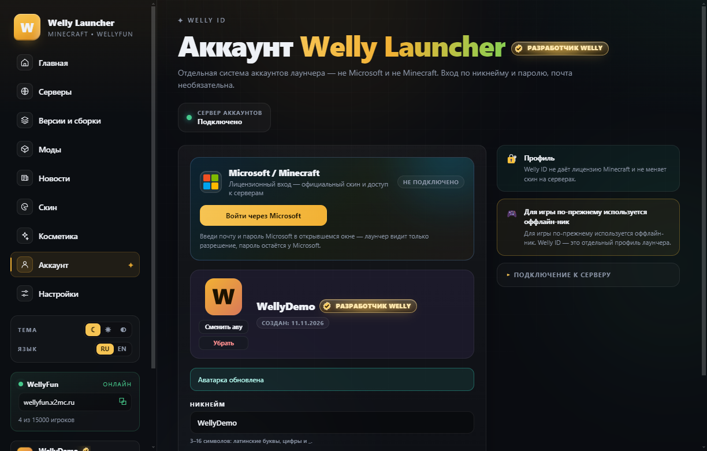

АккаунтыWelly ID и аватарки
Аккаунт Welly ID создаётся прямо в лаунчере и работает сразу — сервер аккаунтов встроен. Поставь аватарку: она появится в профиле и в меню лаунчера.
- Ник и пароль, без почты — email необязателен
- Рядом — лицензионный вход через Microsoft